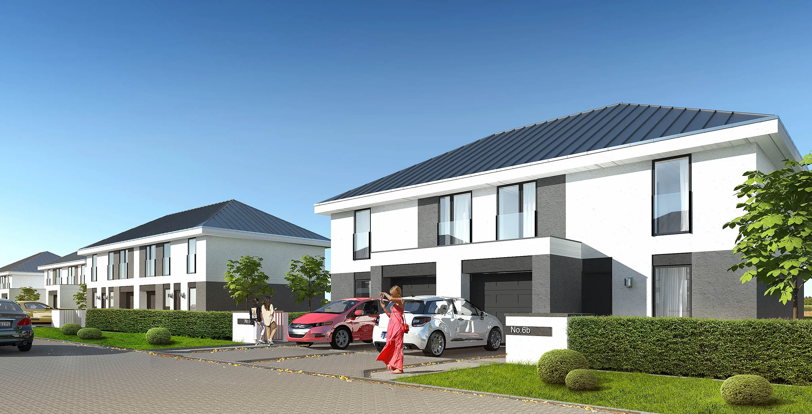
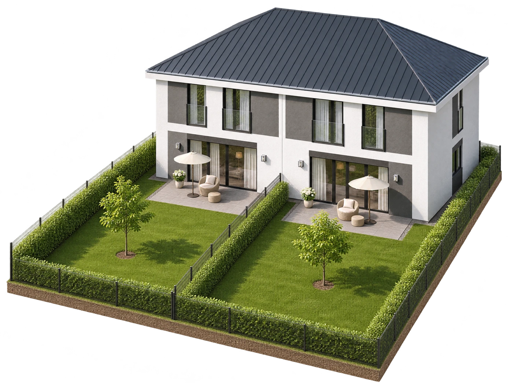
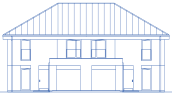
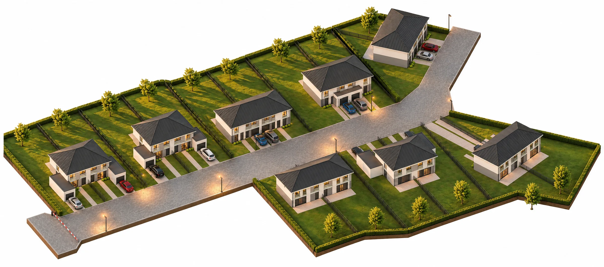
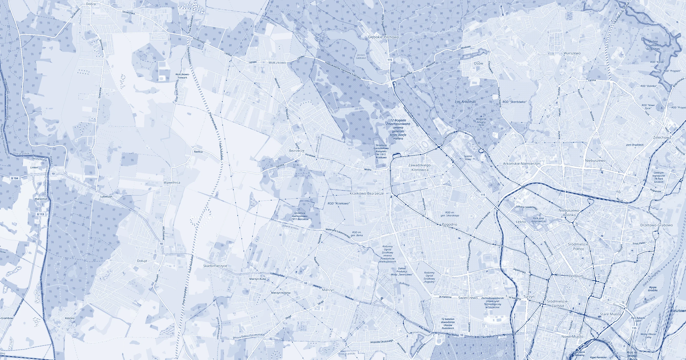
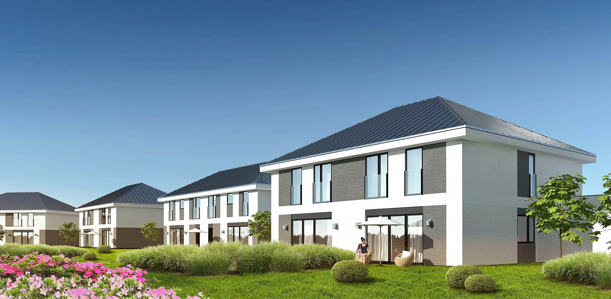
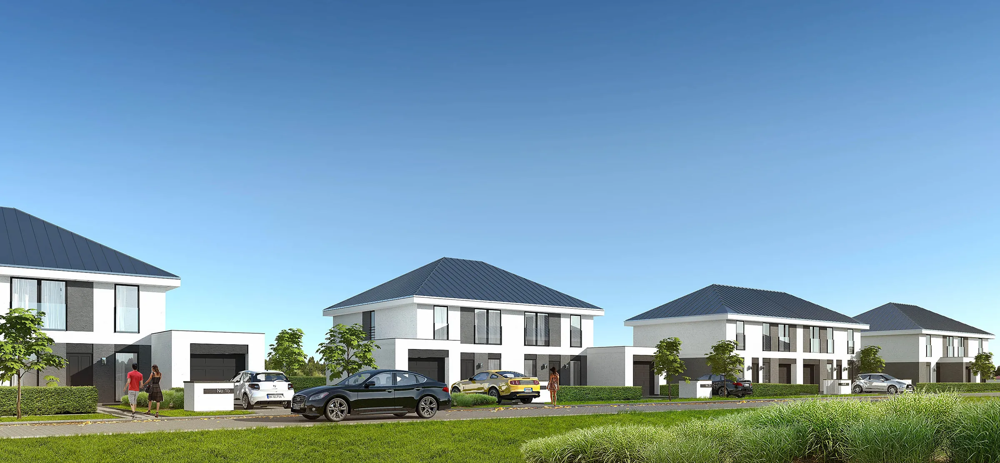
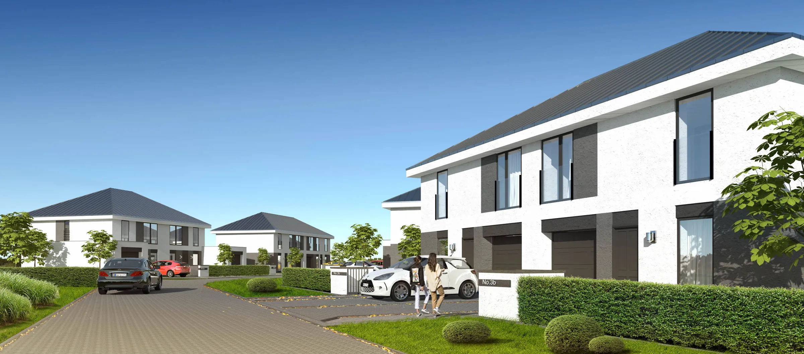

Dom z ogrodem,
w Dobrej.
- 16 domów w zabudowie bliźniaczej
- 120–127 m² z garażem
- Działka około 500 m²
- Oddanie II kw. 2027
Osiem bliźniaków przy prywatnej drodze ze szlabanem.
Wizualizacja inwestora.
O osiedlu
Osiem bliźniaków przy prywatnej drodze.

Każdy dom ma około 120 m² z garażem i własny, ogrodzony ogród.
Na parterze pokój dzienny z aneksem kuchennym, WC i garaż. Na piętrze 3 lub 4 sypialnie i łazienka. Dach czterospadowy, ściany z silikatów, ogrzewanie podłogowe, rekuperacja, klimatyzacja i fotowoltaika.
Na osiedle prowadzi utwardzona, oświetlona droga z wjazdem przez szlaban. Woda i kanalizacja z sieci.
- Wolne domy
- 14 z 16
- Powierzchnia z garażem
- 120–127 m²
- Działka
- ok. 500 m²
- Cena
- 8 900 zł/m²
Model domu z ogrodami: ilustracja poglądowa.

Wolne domy
Wybierz swój dom.
Kliknij dom na makiecie albo w tabeli. Cena jest podana przy każdym wolnym domu.
Dostępnych 14 z 16

Przesuń makietę palcem w bok, żeby zobaczyć całe osiedle.
Wolne (14)Sprzedane (2)
Makieta według planu zagospodarowania. Numer na tabliczce to numer domu, litera to typ, znak ' oznacza drugą połowę bliźniaka.
| Dom | Typ | Powierzchnia | Sypialnie | Cena | Status |
|---|
Powierzchnia domu z garażem według projektu architektonicznego.
Typy domów
Cztery układy, jeden ogród.
Rysunki z projektu architektonicznego. Kliknij rysunek, żeby go powiększyć.
Lokalizacja
Dobra, pod Szczecinem.
Osiedle leży w gminie Dobra (Szczecińska), między Puszczą Wkrzańską a zachodnią granicą Szczecina. Do centrum miasta jedzie się około 21 minut.

- Jezioro Głębokie
- 12 min
- Lubieszyn, granica
- 13 min
- Centrum Szczecina
- 21 min
72-003 Dobra
Budowę można obejrzeć od poniedziałku do piątku w godz. 8:00–17:00. Zadzwoń wcześniej, a umówimy godzinę.
Wizualizacje
Tak będzie wyglądać.



Wizualizacje inwestora.
Budowa
Tak wygląda dziś.
- Etap
- 8 budynków w budowie
- Ostatnie zdjęcia
- 7 października 2026
- Planowane oddanie
- II kwartał 2027


Pytania
Co warto wiedzieć.
- Ile kosztuje dom?
- 8 900 zł za m². Przy powierzchni od 120,06 do 127,19 m² z garażem to od 1 068 534 zł do 1 131 991 zł. Do domu należy ogrodzona działka około 500 m². Szczegółowe warunki sprzedaży ustalamy indywidualnie.
- Kiedy domy będą gotowe?
- Trwa budowa 8 budynków pierwszego etapu, czyli 16 domów. Oddanie do użytkowania planowane jest na II kwartał 2027.
- Co obejmuje stan deweloperski?
- Tynki, posadzki, suchą zabudowę sufitu i instalacje. W domu jest salon z aneksem kuchennym, dwie łazienki, 3 lub 4 pokoje na piętrze, garaż i pomieszczenie gospodarcze.
- Z czego zbudowany jest dom?
- Technologia tradycyjna: płyta fundamentowa, ściany z silikatów, lany strop żelbetowy, dach czterospadowy i poddasze nieużytkowe. Ocieplenie ze styropianu 18–20 cm, okna PCV trzyszybowe, opcjonalnie z roletami. Dom spełnia parametry domu energooszczędnego.
- Jak dom jest ogrzewany?
- Elektrycznie: kabel grzewczy zatopiony w posadzkach. Do tego rekuperacja i klimatyzacja, a na zewnątrz fotowoltaika i zbiornik na wodę deszczową. Na obie te instalacje można uzyskać dotację z programów rządowych.
- Jak wygląda osiedle?
- Przed domami biegnie utwardzona, oświetlona droga dojazdowa. Wjazd prowadzi przez zamykany szlaban, każda działka jest ogrodzona, a woda i kanalizacja są z sieci.
Zapytaj o dom.
604 995 123Odpowiemy na pytania o konkretny dom, termin oddania i warunki zakupu.
Oglądanie budowy: poniedziałek–piątek, 8:00–17:00, po wcześniejszym telefonie.